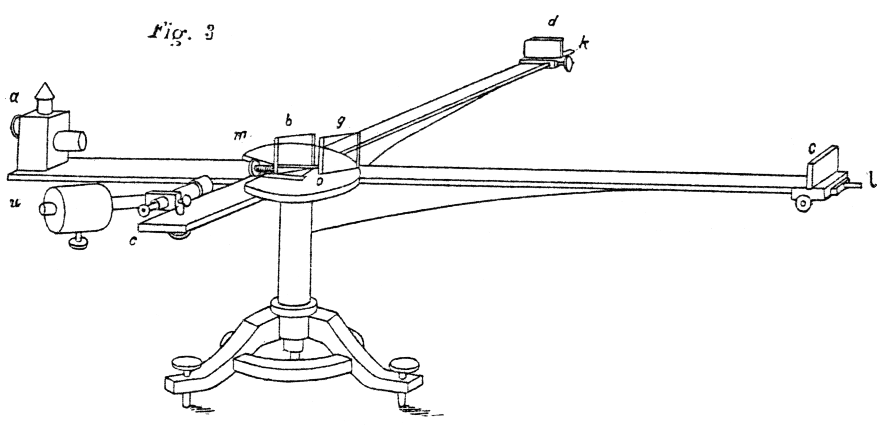

13 Falsification & Elimination Rules
So how do we make judgments? Let’s begin with judgments in science, what we learned from Popper is typically about falsification. In the next chapter we will switch to verification in computational judgments. Together these will seem like a potent combination but there is a catch. What you will notice is that the sorts of statements that are easily falsified are different from the sorts of statements that are easily verified. It is almost as if the two systems are complementary, because in fact for some judgments there are complementary roles. Logicians call this approach substructural because it is not all the rules at once but instead we start to play and wait for situations to emerge that make further rules necessary and interesting.
13.1 Falsification is progress
After the success of Boltzman in explaining gasses and sound as the movement of molecules it seemed plausible to 19th century scientist that light was the movement of a substance called luminescent ether. Believing this hypothesis, Michelson and Morley set out to measure the speed of light as it move through the ether. They decided to measure the same light at right angles. You can think of a canoe moving in a pond. If you measure its speed forward-and-backwards it will be going faster than it is side-to-side. So whatever the orientation of the experiment, the measurement at right angles should be different. Huge surprise, it was exactly the same! Light it seemed was not moving through a luminescent ether.

Science experiments are nearly always about falsifying a hypothesis. There are simply too many factors that can go wrong or unnoticed influences to think of an experiment as proving a hypothesis. Instead, as Popper suggested, the absence of a falsifying experiment is the best support of a scientific hypothesis. So how do we falsify a hypothesis?
As a caution, we often like to inject a variety of alternative words for falsification such as “refute”, “disprove”, “invalidate”, “negate”, “contradict”, and even “reject”. This are generally identical and here just for the poetic license of us authors. It is a form of mal-practice and computer programs are typically strict about requiring just one word such as false. And yet, I’m hoping you are human reading this and not a chatbot and that you appreciate that I did not want to fall asleep while writing this nor did I want to put you to sleep while reading it. Please don’t falsify my hope.
13.2 Falsifying conjunction \(\wedge\)
The following everyday scenarios are generally judged as fair and reasonable. Why is this?
- A job candidate’s application list strengths as “punctual and organized” but they showed up late to the interview. They were judged not to be trusted.
- Ice is solid and below \(0^{\circ}C\). You squeeze the bag and it is squishy. It is no longer ice.
- Entry requires ID and a ticket. You cannot find your ID and cannot get in.
To gather these examples into one we can use variables to replace the parts that varied and see if we observe a pattern. But first, we need to take a moment to explain how we like to write down logic.
Language limits
The English word “AND” is a bit too generic to make a reliable logical operator. For instance, we might write
- 12 is positive and even.
- Study and you will get good grades.
In the first sentence 12 is given two properties that happen to coexist. This is the way logic thinks of “and”. Meanwhile the second sentence seems to indicate that the first property (studying) is responsible for the second (good grades). If you need further confirmation that something is different about these two uses consider swapping the order.
- 12 is even and positive. (Meaning unchanged)
- You will get good grades and study. (Meaning altered.)
Be aware that logic steps back the options for the meaning of everyday words so that when used confusion is minimized.
In order to introduce logical operators recall from your childhood the notations used for other operators such as addition and multiplication:
\[ \begin{array}{rc} & 11\\ + & 12\\ \hline & 23 \end{array} \qquad \begin{array}{rc} & 11\\ * & 12\\ \hline & 132 \end{array} \qquad \begin{array}{rc} \\ - & 11\\ \hline & -11 \end{array} \qquad \begin{array}{rc} & \\ 0 & \\ \hline & 0 \end{array} \] These last two are not too common but they continue the pattern showing that we could operate by the negative sign on a single input and the the constant 0 is akin to an operator with no inputs. We will use a similar notation to begin explaining our logical operators and later we will adjust this into what is known as “sequent calculus”. When this takes up too much vertical space we can flip the notation horizontally similar to \(11+12=23\), but instead of and \(=\) sign we use our judgment symbols \(P, Q\vdash R\) for example. This is the same symbol we used for judgment and indeed the horizontal dividing line and \(\vdash\) here are place holders for a judgment in some systems be it theoretical (\(\vDash\)), practical (\(\Vdash\)), or computational (\(\vdash\)).
Conjunction Elimination
The proposition “\(P\) and \(Q\)” justifies the proposition \(P\). It also justifies the proposition \(Q\).
Because the word “and” is so necessary in everyday language we prefer to use a symbol like \(\wedge\) (or & or && or even AND) and the word conjoined/conjunction to make it obvious that we are trying to study the logic of “and” not the word as it might be used in common language. So in symbols first we have a “Language rule” \[
\tag{$\wedge$-Language}
\langle conjunction \rangle ::= \langle proposition \rangle \wedge \langle proposition \rangle
\] then we have the rules to use conjunctions: \[
\tag{$\wedge$-Elimination}
\begin{array}{rl}
\text{get}_P & P \wedge Q \\
\hline
& \phantom{P\wedge}P
\end{array}
\qquad
% \tag{$\wedge$-Elimination}
\begin{array}{rl}
\text{get}_Q & P \wedge Q \\
\hline
& \phantom{P\wedge}Q
\end{array}
\] Alternative with inline notation we may write this as \(P \wedge Q \vdash P\); similarly, \(P \wedge Q \vdash Q\). The traditional name in mathematics is \(\pi_P\) for \(\text{get}_P\) and \(\pi_Q\) for \(\text{get}_Q\) where \(\pi\) represents “project”, as in to project \(P\wedge Q\) to \(P\). As a diagram we can capture this rule thus:
The term elimination is to signify that we had a premise with the symbol, in this case \(\wedge\), but that symbol has been eliminated in the conclusion. Indeed \(\wedge\) does not appear to the right of the judgment turnstile \(\vdash\) in the \(\wedge\)-eliminiation rule.
As a diagram you can typically spot elimination rules as the arrows that leave the term being eliminated. In this case the arrows leave \(P\wedge Q\) and point to \(P\) and \(Q\). We will see this pattern again with other elimination rules.
Now each of the above sample sentences use conjunction in its own way.
Let us consider the first judgment in practice (\(\Vdash\)):
A job candidate’s application list strengths as “punctual and organized” but they showed up late to the interview. They were judged not to be trusted.
Setting
- \(P\) = “punctual”
- \(Q\) = “organized”
- \(P\wedge Q\) = “punctual and organized” is hypothesized as valid.
- \(P\) is false, (the candidate was late).
This means the interview panel can use \(\wedge\)-elimination to justify the claim that the candidate is punctual. \[ P\wedge Q \Vdash P \] Together we have \(P\) is both valid and invalid.
This is acceptable in a practical judgment where truth can be on a spectrum or have degrees of truth. This would however down grade that degree which prior to the late arrival would have been fully true. This would put the panel in the position to ask for an explanation or institute a probationary period to see if the the punctuality claim gains or looses credence.
Recall that one of the models for practical judgment is to invent a symbol \(+\) that stands between truth \(\top\) and falsity \(\bot\). Once more borrowing from childhood remember those addition and multiplication tables where row \(i\) and column \(j\) has the value of \(i+j\) or \(i*j\), or now the judgment \(i\wedge j\). Here is one of those choices set along side \(\min\) as a numerical representation of the same logic.
\[ \begin{array}{|c|ccc|} \hline \wedge & \bot & + & \top \\ \hline \top & \bot & + & \top \\ + & \bot & + & + \\ \bot & \bot & \bot & \bot \\ \hline \end{array} \qquad \begin{array}{|c|ccc|} \hline \min & -1 & 0 & 1 \\ \hline 1 & -1 & 0 & 1 \\ 0 & -1 & 0 & 0 \\ -1 & -1 & -1 & -1 \\ \hline \end{array} \]
The truth tables serve a stronger function than we currently need. All we require is that \(P\wedge Q\Vdash P\) and \(P\wedge Q\Vdash Q\), which we read by observing the places where \(P\wedge Q\) in the table are \(\top\). In the small case there is exactly 1, when both \(P\) and \(Q\) are \(\top\) and so indeed both rules are supported. However these tables now hint at mixed facts. For example, if we think of \(+\) as a mix of true and false (the paradox setting) then when we have \(P\wedge Q\) as a \(+\) it could come form having each of \(P\) and \(Q\) at least \(+\). Which makes sense in some logics which might argue that there is a part of each that is true in the mix in those cases and so that should persist. We call this an optimistic view. A pessimistic view might prefer that once there is some doubt the doubt should grow. In any case, this connection to decimal numbers generalizes to large practical judgments where it is too much to write and remember a table. For example in the fuzzy context where truth values are a spectrum of \(a\leq \varepsilon \leq b\) of decimal numbers (possibly allowing \(a=-\infty\) and \(b=\infty\)) we can use the minimum function.
Assuming every proposition \(P\) is assigned a value \(a\leq |P|\leq b\). Choose a tolerance \(a\leq \varepsilon \leq b\) and say that \(P\) is valid (in the implicit context \(\Gamma\)) whenever \(|P|>\varepsilon\), writing \(\Vdash P\). Then the conjunction operator \(\wedge\) can be defined as \[ |P\wedge Q| = \min(|P|, |Q|) \] Hence, whenever \(P\wedge Q\) is valid then \(P\) is valid, i.e., \(P\wedge Q\Vdash P\). Similarly, \(P\wedge Q\Vdash Q\).
Proof. Suppose \(P\wedge Q\) is valid. That means \[ \varepsilon < \min(|P|,|Q|)\leq |P| \text{ implies } \varepsilon < |P|. \] So \(P\wedge Q \Vdash P\). Similarly, \(P\wedge Q \Vdash Q\). \(\Box\)
Next compare the judgment in theory (\(\vDash\)):
Ice is solid and below \(0^{\circ}C\). You squeeze the bag and it is squishy. It is no longer ice.
Here the context is theoretical \((\vDash)\) since concepts like solid and below \(0^{\circ}C\) are theoretical/scientific concepts. So we have
- \(P\) = “solid”
- \(Q\) = “below \(0^{\circ}C\)”
- \(P\wedge Q\) = “solid and below \(0^{\circ}C\)” is hypothesized as valid.
- \(P\) is false, (the ice is squishy).
We can use \(\wedge\)-elimination to justify the claim that the ice is solid. \[ P\wedge Q \vDash P \] So \(P\) is again both true and false. However, in a theoretical judgment \(P\) we reject the mixing of truth and falsity. Therefore one of the premises must be false.
Because theoretical logic is based on the hypothesis that all judgments are exclusively true \(\top\) or false \(\bot\) we can reduce the table of minimums to just \(\pm 1\) to obtain the following “truth table” for theoretical conjunction.
\[ \begin{array}{|c|ccc|} \hline \wedge & \bot & \top \\ \hline \top & \bot & \top \\ \bot & \bot & \bot \\ \hline \end{array} \qquad \begin{array}{|c|cc|} \hline \min & -1 & 1 \\ \hline 1 & -1 & 1 \\ -1 & -1 & -1 \\ \hline \end{array} \]
Tables like these are known as “Boolean algebra” after George Boole who emphasized the study of strictly true/false logic. Today it is part of greater study of both algebra and logic. Just as learning arithmetic is more than memorizing addition tables, learning conjunction today should be more than memorizing any one of these tables.
Finally let us consider the third judgment in computation (\(\vdash\)):
Entry requires ID and a ticket. You cannot find your ID and cannot get in.
Setting:
- \(P\) = “ID”
- \(Q\) = “ticket”
- \(P\wedge Q\) = “ID and ticket” is required for entry.
- \(P\) is unknown (the ID is missing).
Under what logic can the gate agent refuse entry? Well if we are found inside the venue then \(P\wedge Q\) is judged true by the venue rule. Then by the \(\wedge\)-elimination we would have evidence also for \(P\). This could get the agent in trouble since the agent never saw ID and that judgment would not be in question. Of course in theory you likely do have ID, but in a computational judgment evidence is required to justify claims.
Since computational logic involves evidence it is often the case that we could write this with a physical program. The syntax is to have function that extracts from the evidence for \(P\wedge Q\) some evidence for \(P\). A common name for such a function getP though you may also find names like toP or simply .P. We will so more on this when we get to data types but some examples in software might appear as follows:
Sometimes the methods used by a language are from historic or cultural reasons. In Lisp the data structure is a list and the first element is called the car and the second element is called the cadr. So we can write:
Now it is not that computation cannot handle tables of truth values, it is simply that when we write them we have to leave some values empty.
In scientific experiments there is no truth, just failure to falsify. So conjunction in experimental values is a form false \(\bot\) and unknown \(?\).
\[
\begin{array}{|c|ccc|}
\hline
\wedge & \bot & ? \\
\hline
? & \bot & \bot \text{ or }? \\
\bot & \bot & \bot \\
\hline
\end{array}
\]
In computation validity is presence of evidence (data) \(\top\) and when it is missing we leave a \(?\). \[ \begin{array}{|c|ccc|} \hline \wedge & ? & \top \\ \hline \top & \top \text{ or }? & \top \\ ? & \top \text{ or }? & \top \text{ or }? \\ \hline \end{array} \]
Said another way, both operators are partial, they do not provide a value for all combinations of inputs so we are left to wonder which of the possible values is intended. In particular we cannot simply assign the unknown to the missing value of truth or falsity can treat this a version of Boolean algebra.
13.3 Falsifying universal quantification \(\forall\)
An even stronger version to conjunction judgments are universal quantification judgments. These make judgments simultaneously about several claims. To do this we think of a sentence \(P\) that contains a variable \(x\) such that when we substitute for \(x\) we get proposition. The deserves its own name.
A predicate is a string \(P\) containing a variable \(x\) (or variables) such that when we substituting we get a proposition in the judgment system.
Here are some examples of predicates.
- \(p\) is a prime number.
- \(x\) is a mammal.
- \(541\) is the 100th prime number.
Notice in the last line we have a predicate without variables. That allowed as well.
Bringing thing back to universal quantification, the clue is usually to involve the words “all” or “every” though at times it can be more subtle such as omitting to say where the variable comes from.
- For all integers \(n\), \(n^2\geq 0\)
- Every bat is a mammal.
- Every applicant will have their application reviewed. (Falsifiable, but still a universally quantified proposition).
- Cars have four wheels. (Here we have omitted to say “all cars” or “every car” but it is implied by the style of English grammar, or least English conversation in the USA, forgive me New Zealander’s if you would not be so rash.)
The proposition “For all \(x\), \(P(x)\)” justifies for each substitute \(c\) for \(x\) the resulting proposition \(P(c)\) is valid. We use the symbol \(\forall\) with the following grammar \[ \tag{$\forall$-Language} \langle universal \rangle ::= \forall \langle variable\rangle.\langle predicate \rangle \] and eliminate it thus: \[ \tag{$\forall$-Elim.} \begin{array}{rl} & \forall x.P(x) \\ \text{get}_c & \phantom{\forall}c \\ \hline & \phantom{\forall x.}P(c) \end{array} \] The use of the name \(\text{get}_c\) for the elimination rule is to signify more precisely for which value \(c\) are we using the claim.
In falsifying a universal quantification we need only find even one \(c\) such that \(P(c)\) is invalid. This is known as a counterexample.
The diagram form of \(\forall x.P(x)\) is quite similar to the diagram for \(\wedge\)-elimination. The difference is that we have a variable \(x\) and we can substitute any value for \(x\) to get a proposition. So the diagram is more like a tree with many branches.
Using \(\forall x.P(x)\) is in line with our earlier discussion of Church’s \(\lambda\)-calculus where we wrote \(\lambda x.M\). In fact some authors would prefer we wrote \(\forall x. P\) instead of \(\forall x.P(x)\) and I see their point. But I have taught so many students that I think correctness should give way to clarity on this point. Also, I want to call attention to the fact that \(\forall\) is an upside down \(A\) to signify “all”, but as a happens it also looks like a bull with horns. In fact, the alphabet originally drew the letter \(A\) this way as a bull’s head because the ancient word for bull was “eleph” which starts out sounding like the letter “A”. It was flipped upside down around 800 BC to draw attention to a formal change in the alphabet and signal to readers they were using the new alphabet.
Welcome home eleph , math is happy to have you back!
Falsify the proposition “All dogs have four legs” by finding a counterexample. Detail the predicate and the system of judgment being used.
Software was somewhat late to including universal quantification in general but there are several idioms and data types in programming languages that give partial support.
In many languages you must name all the substitutes for a variable in a predicate creating what is known as “record” or “structure”. The meaning of each entry depends on the label. For example, the following record Dog gives one type of meaning for legs (a number) and another for name (a string). For labels that are not included the meaning is understood to be a failure.
Many languages allow a lists of different data so that the position in the list is all we need to supply. When the data is the evidence for a proposition this provides a form of \(\forall i. P(i)\) where \(i\) is the positions in the list.
In C++ and other languages it is possible to prescribe code that will be copied and variables replaced called template. Variables are in the bracket form <var>. In these systems we can sometimes include numbers as part of the template giving an effect similar to quantifying over numbers \(\forall i.P(i)\). For example,
#include <array>
#include <cstddef>
template <std::size_t N>
using Vec = std::array<float, N>;
template <std::size_t N>
Vec<N> range() {
Vec<N> v{};
for (std::size_t i = 0; i < N; ++i) {
v[i] = static_cast<float>(i);
}
return v;
}
// usage:
Vec<4> v = range<5>(); // Fails! 4 is not 5
Vec<5> v = range<5>(); // {0.0,1.0,2.0,3.0,4.0}
std::size_t n = ...; // some size in the future.
Vec<n> v = range<n>(); // Works for any nFull throated support for universal quantification is found in languages with dependent types. They feature a syntax such as forall x. P(x) or def f(x:X) :P(x). Idris is such a language.
We shall see more on this in the next chapter when we cover types officially.
13.4 Falsifying implication \(\to\)
Let us run through a number of arguments which in most contexts would be judged as valid, then we will explain why that is.
- Your e-mail provider’s rules say that “If the file is over 5 MB then it will be sent as a link.” You attach a video that is 100 MB; so, your recipient only got a link to the video.
- If there is an unsaved file then the application will not close. You close the application with no unsaved work and the application closes.
- If you are logged in to the University Wifi then you can access the library databases. You logged in but you currently cannot access the library databases. Obviously you were misinformed.
- There will be a school closure, if the authorities predict a snowstorm. The school is closed, but there was no snowstorm, it was a holiday.
- If drop a heavier object then it will hit the ground first. Galileo dropped objects of different weight and they hit the ground at the same time.
So let us set aside disjunction and look for other arguments that like conjunction seem straightforward.
The proposition “\(P\) implies \(Q\)” justifies the proposition \(Q\) if we also have the proposition \(P\). We use the symbol \(\to\) (or if <this> then <that> or \(\Rightarrow\)) and write the rule as \[
\tag{$\to$-Elim.}
\begin{array}{rl}
& P \to Q \\
@ & P \\
\hline
& \phantom{P\to}Q
\end{array}
\] Historically this is known as modus ponens (the way that affirms). The term elimination however helps us see the parallels with other logic like \(\wedge\).
In many ways \(P\to Q\) is already a diagram, however, it provokes a followup question which is that some proposition \(R\) is surely responsible for \(P\) so if we include this into the picture may get a clarifying diagram.
The intention of this diagram is that any two paths between two nodes are equivalent. That is we can go from \(R\) to \(P\) and then to \(Q\) or we may take the shortcut \(R\) directly to \(Q\). This is known as a commutative diagram. We will have much more on this in the next chapter.
To falsify an implication we need only find \(P\) valid with \(Q\) invalid.
Using theoretical judgment (\(\vDash\)) we can falsify the following implication:
If \(n\) is an integer then \(-n\neq n\).
Setting \(P\) to be “\(n\) is an integer” and \(Q\) to be “\(-n\neq n\)”. We can falsify by find an integer, e.g. \(n=0\), and then validating \(-n=n\), or rather, that \(Q\) is invalid. By \(\to\)-elimination (Modus Ponens) the validity of \(P\) proves the validity of \(Q\). \(P\) valid and \(Q\) invalid. In a theoretical logic \(Q\) cannot be both true and false. So one of our premises must be false.
In a practical judgment (\(\Vdash\)) we can falsify the following implication:
If you are logged in to the University Wifi then you can access the library databases. You logged in but you currently cannot access the library databases.
Here \(P\) is “logged in to the University Wifi” and \(Q\) is “can access the library databases”. We can falsify proposition that \(P\to Q\) by observation is \(Q\) is invalid.
Now in a practical judgment it is possible that \(Q\) is both valid and invalid. So this alone does not fully falsify the implication but it suggests further investigation. In fact we can all imagine that from the perspective of the application we do have access but some other unknown practical issue prevents it from succeeding. This is why practical judgments are often much more difficult but also much more representative of events.
Finally let us attempt to falsify an implication in a computational judgment (\(\vdash\)), this time in a scientific context:
If drop a heavier object then it will hit the ground first. Galileo dropped objects of different weight and they hit the ground at the same time.
So \(P\) is “drop a heavier object” and \(Q\) is “it will hit the ground first”. Galileo had \(P\) valid with \(Q\) false. He therefore had evidence for both. Yet, if there was evidence for \(P\to Q\) then with \(\to\)-elimination we would have evidence for \(Q\) being true. In computational judgment true and false cannot coexist. So the only premise without evidence, that \(P\to Q\), must be falsified.
Since computational implication involves evidence we can package that evidence as data and build programs.
You might think at first that I mean the standard if-then statement found all over programming languages. I do not. Those behave much more like a theoretical judgment of implication where if expects to be followed by value true if it is to execute what follows the then, e.g.
if closing then saveFiles()However there are many clues as to why that idiom of programming has nothing really to do with implication. Notice that what follows is an event or task, not a judgment. It may or may not involve data. This construct it turns out is much better understood as a short form of cases. Some readers may infact be familiar with case-switching idioms in programs and how these list multiple options having nothing to do with true and false. It is too late to rename this idiom and many find it useful. So use it. Even so make space for the following interpretation to fill out your computational judgment of implication.
Computational implications are literal functions transforming the evidence we have for \(P\) into evidence for \(Q\). This is why I choose the name \(@\) for the elimination rule. We can think of the evidence \(f:P\to Q\) as describing the function (via substitution or combinators) and when we get evidence \(c\) for \(P\) we plug that into our function \(f\) to produce evidence for \(Q\). Programs often choose suggestive names for function precisely to capture this intent when reading a function application outloud.
Note that in Java the built-in method toString() already exists for this task, so we have rename it to asString() to avoid confusion. In C++ we can use the std::to_string() method.
13.5 Putting it together
Notice elimination rules as diagrams are arrow out of the term being eliminated.
Falsification rarely comes with just one step. Often we have to knit together multiple judgments and the part that fails can often be deceptively buried or even missattributed. Falsifications may seem easier because they often just need examples, but because the complexity can be hidden in how many steps are involved and what precisely fails. To offer just a small taste we consider the following example from the family of diagnostics
A common use of falsification is diagnostics where we assemble a list of conjoined statements (propositions) and we find one that is false.
- Proposition: A healthy dog’s nose is cold and wet.
- Evidence: Your dogs nose is dry.
Conclusions The dog is not healthy.
To take the argument apart we really have the structure of one event implying other:
Notice that what is actually been falsified is not any of the premises given but rather the one that could first derive from the others. That is we first have to compose the implication Healthy \(\to\) (Cold \(\wedge\) Wet) with the rule Cold \(\wedge\) Wet \(\to\) Cold to get a new premise Healthy \(\to\) Cold. Finally we find evidence that Cold is false which falsifies either claim that Healthy leads to Cold or that Healthy is true. We can see within each modification of the argument there is room for error and confusion. If this is in a practical judgment we may very well have mounting errors in our conclusions.
So what is missing from all this discussion is how precisely we come to have a claim of conjunction, implication, or universal quantification. By focussing on what is easy to refute we just needed to know how claims could be used, thus eliminated. In the next chapter we flip the script and focus on what is easy verify.